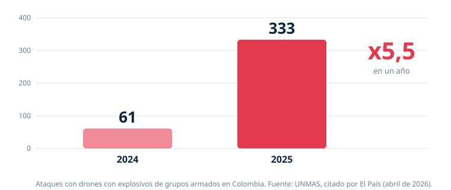
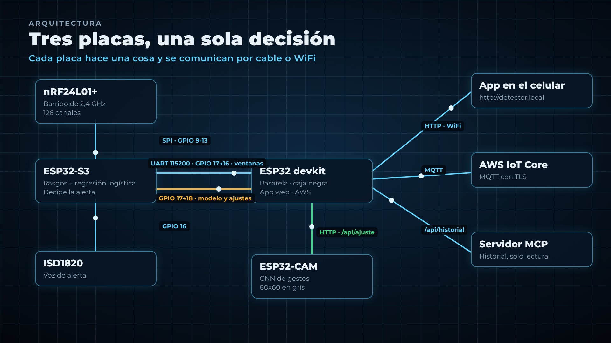
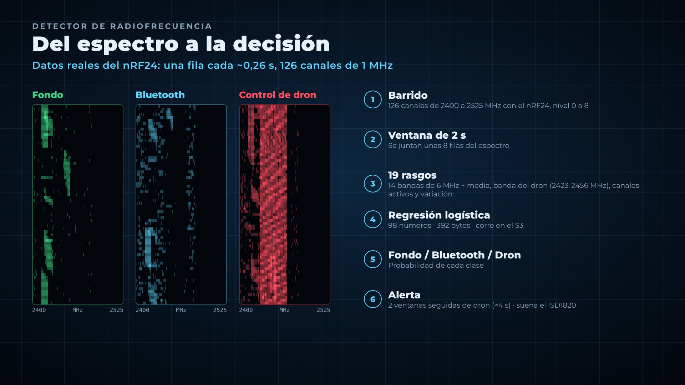
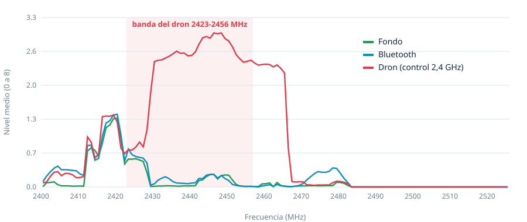
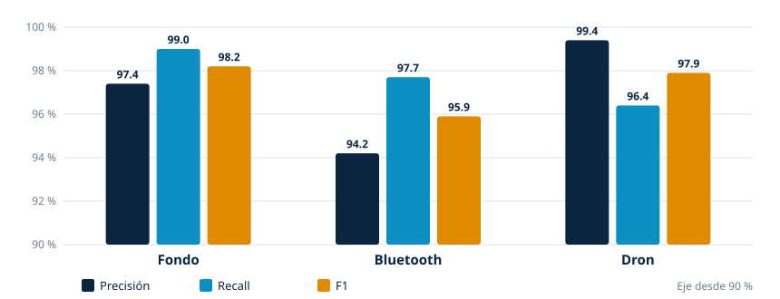
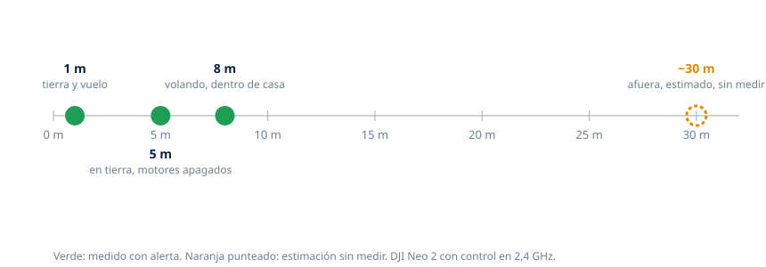
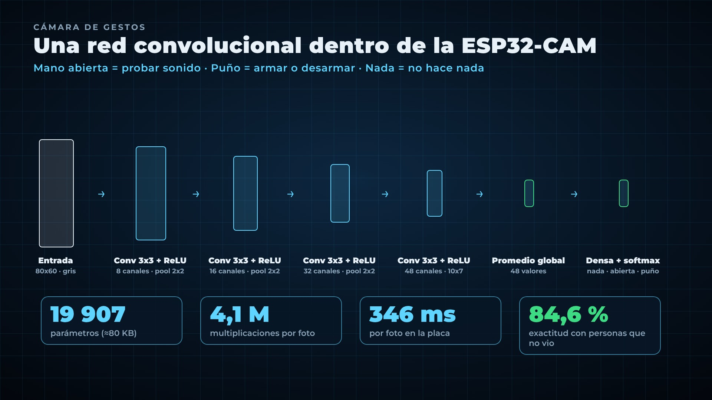
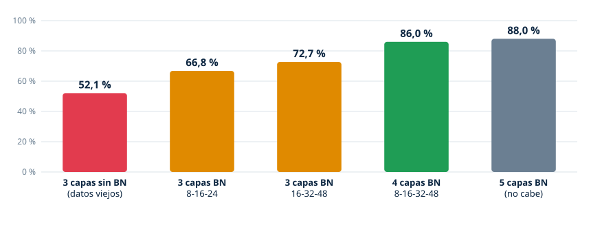

Detección pasiva de drones por radiofrecuencia con inteligencia artificial en el borde, más control por gestos con una ESP32-CAM.
Para el profesor y los jurados · Qué se hizo, cómo se hizo, qué cubre, preguntas posibles y guion de sustentación para 4 personas Versión del 27 de noviembre de 2026 · Repositorio: github.com/JCMelendezT/IAoT
Contenido
Qué hay en este documento
1El proyecto en una página
2Problema, alcance y lo que no hace
3Arquitectura y conexiones
4Cómo detecta el dron
5Datos, entrenamiento y validación
6Resultados del detector
7Lo que corregimos en el camino
8Devkit, app, caja negra, AWS y MCP
9Cámara de gestos (visión en la ESP32-CAM)
10Qué cubre del curso
11Cronología
12Límites y siguientes pasos
13Preguntas posibles y respuestas
14Guion de sustentación para 4 personas
15Glosario rápido
1. El proyecto en una página
Centinela RF escucha la banda de 2,4 GHz, reconoce la señal del control de un dron con un modelo que corre dentro de un ESP32-S3 y da la alerta en unos 4 segundos, sin internet y sin transmitir nada.
97,4 %
Exactitud del detector (bloques de 1 min, 10 pliegues)
0
Falsas alarmas con la regla de 2 ventanas seguidas
392 B
Tamaño del modelo del detector (98 números)
8 m
Alerta dentro de casa con el dron volando
126
Canales de 1 MHz que barre el nRF24
84,6 %
Exactitud de la red de gestos con personas que no vio
346 ms
Por foto en la ESP32-CAM
3
Placas ESP32 + 3 prácticas del curso en un solo repo
El sistema tiene tres placas. El ESP32-S3 con un nRF24L01+ escucha y decide. El ESP32 devkit guarda todo, sirve la app del celular y sube los datos a AWS. La ESP32-CAM corre una red convolucional que reconoce gestos: mano abierta prueba el sonido y puño arma o desarma la voz de alerta.
2 · Problema
Por qué un detector de drones
En Colombia los ataques con drones cargados con explosivos crecieron rápido: según UNMAS pasaron de 61 en 2024 a 333 en 2025. La Defensoría del Pueblo reportó que entre enero y mayo de 2026 subieron 146 % frente al mismo periodo de 2025, con 21 muertos y 145 heridos. Quien está en tierra tiene segundos para saber que hay un dron cerca.
El objetivo fue demostrar que un equipo barato, con piezas de menos de 50 dólares, puede reconocer la huella de radio del control de un dron comercial y avisar, decidiendo dentro de la placa.

Alcance
Lo que hace
Lo que no hace (a propósito o por límite)
Detecta el control de un dron que transmite en 2,4 GHz (probado con un DJI Neo 2)
No interfiere, no bloquea ni derriba drones. Interferir señales sin permiso es ilegal en Colombia
Distingue tres clases: fondo, Bluetooth y dron
No ve drones en 5,8 GHz ni manejados solo desde el celular
Alerta con sonido, LED, app y nube
No da dirección ni distancia exacta: solo dice que hay un dron cerca
Funciona sin internet: la decisión está en el S3
No se ha probado en campo abierto con medición formal
Por qué es pasivo: el S3 solo recibe. No abre enlaces WiFi ni Bluetooth propios porque meterían señal justo en lo que mide; por eso el que habla con el celular es el devkit.
3 · Arquitectura
Tres placas, una sola decisión

Figura 1. Arquitectura completa: placas, pines, protocolos y servicios.
Hardware
Pieza
Qué hace
Detalle
ESP32-S3 DevKitC-1 (N16R8)
Cerebro del detector
Calcula rasgos, corre el modelo, decide la alerta, controla el nRF24 y el sonido
nRF24L01+ PA+LNA
Sensor de espectro
Barre 126 canales de 1 MHz (2400 a 2525 MHz), condensador de 100 µF
ISD1820 + parlante 8 Ω
Voz de alerta
Reproduce lo grabado; suena al empezar la alerta y cada 5 s
ESP32 devkit (WROOM-32)
Pasarela
Caja negra, app web, red propia CENTINELA-RF, AWS, API para el MCP y la cámara
ESP32-CAM AI-Thinker (OV2640)
Visión
CNN de gestos a 80x60 en gris; habla con el devkit por WiFi
DJI Neo 2
Dron de prueba
Control fijado en 2,4 GHz en DJI Fly
Conexiones
De
A
Cómo
Para qué
S3 GPIO 9, 10, 11, 12, 13
nRF24 CE, CSN, MOSI, SCK, MISO
SPI
Leer el espectro
S3 GPIO 16
ISD1820 P-E
Pulso
Reproducir la alerta
S3 GPIO 17
Devkit GPIO 16 (RX2)
UART 115200
Ventanas: líneas V, D, R y E
Devkit GPIO 17 (TX2)
S3 GPIO 18
UART 115200
Modelo nuevo y ajustes
Devkit 5V y GND
ESP32-CAM 5V y GND
Alimentación
La cámara habla por WiFi
Devkit
Celular, AWS, MCP
HTTP, MQTT con TLS (8883), HTTP
App, nube, historial
ESP32-CAM
Devkit
HTTP POST /api/ajuste
Probar sonido, armar o desarmar
Por qué dos placas y no una: el S3 no puede estar en modo de escucha saltando de canal y a la vez conectado al router. Además, su propio WiFi ensuciaría la medición. El S3 solo escucha y el devkit se conecta al mundo.
4 · Detección
Cómo detecta el dron
Cada 2 segundos el S3 convierte lo que oyó en 19 números y una regresión logística decide entre fondo, Bluetooth y dron.
1. BarridonRF24: 126 canales, nivel 0 a 8, unas 4 filas por segundo
›
2. Ventana2 s, unas 8 filas del espectro
›
3. Rasgos19 números por ventana
›
4. ModeloRegresión logística, 98 números
›
5. ClaseFondo, Bluetooth o dron, con probabilidad
›
6. Alerta2 ventanas seguidas de dron

Figura 2. Espectro real grabado el 10 de noviembre: el control del dron llena la banda central.
La huella del dron en el espectro

Figura 3. Nivel medio por canal en las grabaciones de cada clase. Calculado con las grabaciones crudas del 10 de noviembre.
En estas grabaciones, la banda de 2423 a 2456 MHz tiene en promedio unas 15 veces más actividad con el control del dron que con el fondo. El router de la casa trabaja en el canal 8 (2437 a 2457 MHz), justo dentro de esa banda, así que el fondo ya lo incluye.
Los 19 rasgos
Rasgo
Cuántos
Qué mide
banda_2400 … banda_2478
14
Energía en tramos de 6 MHz (los de más arriba siempre valían cero y se quitaron)
esp_media
1
Nivel medio de todo el espectro
esp_banda_dron, esp_max_banda_dron
2
Nivel medio y máximo entre 2423 y 2456 MHz
esp_canales_activos
1
Cuántos canales tienen señal
esp_variacion
1
Cuánto cambia el espectro entre filas
El modelo cabe en 392 bytes. Es una regresión logística con normalización: 19 medias, 19 escalas, 3 x 19 pesos y 3 sesgos. No hizo falta red neuronal ni cuantizar a int8.
5 · Datos
Datos, entrenamiento y validación
Grabación (10 nov, estudio, 1 m)
Clase del modelo
Ventanas de 2 s
Fondo (casa normal)
fondo
299
Bluetooth (audífonos, parlante)
bluetooth
300
Dron con control, en tierra
dron
300
Dron con control, volando
dron
235
Total
1134
Cómo se hizo
Captura: firmware nodo_captura en el S3 y el capturador del PC (Capturar.bat), con el devkit desconectado para no ensuciar la medición. Cada grabación queda en raw/ y se anota en sesiones.csv.
Ventanas y rasgos:rasgos.py arma ventanas de 2 s con el reloj del ESP32 y calcula los rasgos.
Entrenamiento:entrenar.py normaliza, entrena la regresión logística, evalúa y exporta modelo_detector.h.
Paridad:rasgos_detector.h hace en C++ lo mismo que Python. Las 1134 ventanas dan la misma clase en el PC y en la placa.
Validación
Se usaron dos pruebas. La principal separa bloques de 1 minuto en 10 pliegues, para que ventanas casi iguales y vecinas no queden en entrenamiento y prueba a la vez. La segunda entrena con el primer 70 % de cada grabación y prueba con el último 30 %, que simula datos posteriores.
Límite honesto: lo correcto es separar por sesión, pero hubo una sola grabación larga por clase. Por eso se separan minutos, y se declara como límite. Más sesiones en días y lugares distintos es el primer siguiente paso.
Cambios frente a la propuesta
Propuesta (17 oct)
Lo que se hizo
Por qué
Bosque aleatorio + CNN 2D cuantizada a int8 con TFLite Micro
Regresión logística de 392 bytes
Fue de los modelos que mejor dieron y es tan pequeña que no necesita cuantizar
Rasgos WiFi + espectro
Solo espectro
El WiFi enseñó un atajo que daba falsas alarmas de noche (sección 7)
5 clases
3 clases (fondo, Bluetooth, dron)
Bluetooth sí lo ve el nodo; "celular con video" no aportaba
Pantalla TFT con cascada
Sin pantalla; app web en el celular
La TFT de 1,8" se quedó en blanco con todo lo probado
Teclado para etiquetar
Etiquetas desde la app
Más cómodo y no requiere el PC
Sin cámara
ESP32-CAM con gestos
Lo pidió el profesor
6 · Resultados
Resultados del detector
Matriz de confusión (bloques de 1 min)
Fondo
Bluetooth
Dron
Fondo
296
3
0
Bluetooth
4
293
3
Dron
4
15
516
Filas: lo que era. Columnas: lo que dijo el modelo.
Métricas
Prueba
Exactitud
F1
Falsas alarmas
Bloques de 1 min
97,4 %
0,973
3 sueltas en 0,33 h; 0 con la regla
Último 30 %
99,1 %
0,991
0 en 0,10 h
Cuando dice dron acierta el 99,4 % de las veces (precisión). Encuentra el 96,4 % de las ventanas con dron (recall); las que se le escapan las confunde sobre todo con Bluetooth. La regla de dos ventanas seguidas elimina las alarmas sueltas.

Figura 4. Precisión, recall y F1 por clase.
Alcance probado

Figura 5. Distancias con alerta. Fuera de casa se estimaron unos 30 m volando, pero no se midió.
Latencia: la alerta necesita dos ventanas de 2 s, así que lo esperado es unos 4 s desde que el control empieza a transmitir. No se ha cronometrado formalmente.
7 · Aprendizaje
Lo que corregimos en el camino
El atajo del tráfico WiFi (12 nov)
El primer modelo usaba también rasgos del WiFi capturados en modo promiscuo. De noche daba falsas alarmas. Al revisar los pesos apareció la causa: mientras se grababa el dron, el ESP32 vio 37 tramas por ventana, contra 95 en el fondo. El modelo aprendió que "poco tráfico es dron". De noche la casa está quieta y pasa lo mismo.
Prueba: simulando el fondo con 70 % menos tráfico, el 98,7 % de las ventanas salía como dron.
Arreglo: se entrenó solo con el espectro. 97,4 % de exactitud, cero falsas alarmas con la regla y cero con la noche simulada. El firmware no cambió porque escoge los rasgos por nombre.
Es un ejemplo de por qué hay que mirar qué aprende el modelo y no solo la exactitud: el número era bueno y el modelo hacía trampa.
Otros problemas resueltos
Problema
Causa
Solución
6 % de ventanas distintas entre PC y placa
El PC armaba ventanas con su propia hora de llegada
Usar el reloj del ESP32 en rasgos.py
El nRF24 no respondía
Cable de MISO con mal contacto
Recablear; condensador de 100 µF
El dron no aparecía en el espectro
Control en banda dual o 5,8 GHz
Fijar 2,4 GHz en DJI Fly (límite declarado)
Red de gestos en 52 %
Clase "nada" mal hecha y red muy pequeña
"Nada" sin mano y red de 4 capas con BatchNorm: 84,6 %
Imagen blanca en la ESP32-CAM
Exposición del sensor sin ajustar con el núcleo nuevo
Exposición y ganancia automáticas al arrancar
Gestos sin respuesta del devkit
La cámara esperaba 2,5 s y el devkit tarda hasta 4 s al hablar con el S3
Esperar hasta 7 s y no repetir órdenes
8 · Pasarela y nube
Devkit, app, caja negra, AWS y MCP
Figura 6. App en el celular durante una alerta.
App web servida por el devkit
Se abre en http://detector.local, o en la red propia CENTINELA-RF si no hay WiFi. No es app nativa: una app de iPhone exige Mac, Xcode y cuenta de desarrollador.
En vivo: estado, probabilidades y gráfica de 5 minutos.
Grabar: sesiones etiquetadas de 2 min a toda la noche.
Datos: línea de tiempo, etiquetar rangos y bajar CSV.
Modelo: reentrenar en el navegador y mandar el modelo al S3.
Ajustes: ventanas para alertar, sonido, prueba de voz, redes WiFi.
Caja negra
Cada ventana se guarda con sus 35 rasgos en 82 bytes: unas 9 a 12 horas de memoria (la app mostraba 8,8 h). Al llenarse borra lo más viejo.
Reentrenamiento en el celular
La misma regresión logística de entrenar.py corre en JavaScript; se comparó con scikit-learn y da lo mismo. El modelo nuevo viaja al S3 por el cable GPIO 17→18 con un hash para detectar errores, y el S3 lo guarda.
AWS (Práctica 3)
Pieza
Qué hace
AWS IoT Core
Recibe por MQTT con certificado (puerto 8883) el topic detector1/nodo-s3/lectura cada 5 s, con clase y probabilidad del modelo
Reglas de IoT Core + DynamoDB
Guardan lecturas y eventos en iaot-p3-lecturas y el actuador en iaot-p3-estado
API Gateway + Lambda
Sirven los datos al tablero y mandan comandos al devkit por detector1/actuador/cmd
Tablero en S3
Gráfica, indicadores, clasificación, actuador y CSV
Terraform
Crea toda la infraestructura con terraform apply
La nube no decide. La alerta nace en el S3. AWS guarda, muestra y permite comandos; si se cae internet, el detector sigue alertando con el LED y el parlante.
Servidor MCP
Un servidor MCP en Python (mcp/servidor.py) deja que un asistente de IA como Claude consulte el detector. Pregunta al devkit por HTTP y es de solo lectura, con dos herramientas: eventos_recientes y historial_alertas.
9 · Visión
Cámara de gestos en la ESP32-CAM
El profesor pidió una ESP32-CAM con un modelo de visión entrenado. Se usó para controlar el sistema con la mano: mano abierta prueba el sonido, puño arma o desarma la voz y "nada" no hace nada.
Por qué gestos y no drones: la cámara no ve el espectro, y un dron pequeño a decenas de metros ocupa pocos píxeles en 80x60. Para controlar el equipo sin tocarlo, los gestos sí aportan.

Figura 7. Red convolucional de 4 capas que corre dentro de la ESP32-CAM.
Cómo funciona
Foto QQVGA 160x120 en gris, promediada a 80x60.
4 convoluciones 3x3 (8, 16, 32 y 48 canales) con ReLU y max pool, promedio global y capa densa a 3 clases.
19 907 parámetros (unos 80 KB), 4,1 millones de multiplicaciones por foto, 346 ms por foto (unas 2,8 fotos por segundo).
Regla de disparo: 5 de las últimas 6 fotos con el mismo gesto y confianza de 0,80 o más; luego espera 2,5 s y que vuelva "nada".
Cómo se entrenó
Dataset público HaGRID (muestra de 30 mil imágenes, licencia CC BY-SA 4.0), recortado a 80x60 en gris. "Nada" son recortes sin mano.
PyTorch con BatchNorm; al exportar se funde en cada convolución.
Validación con 1146 fotos de personas que no estaban en el entrenamiento: 84,6 %.
C++ y PyTorch dan lo mismo: diferencia máxima de 6 x 10-8.

Figura 8. Exactitud de cada variante con las mismas personas de validación. La de 5 capas no cabe en los 190 KB de memoria para el modelo.
Figura 9. La cámara reconoce la mano abierta y el devkit responde "ok".
Recall por clase
Clase
Recall
Nada
79,9 %
Mano abierta
94,0 %
Puño
80,3 %
Todo por WiFi
La placa se programó una sola vez usando el devkit como adaptador USB. Después el programa se actualiza por OTA y el modelo se sube desde la página de la cámara; el archivo trae una suma FNV-1a. Tiene modo seguro tras 3 reinicios rápidos y red propia CAMARA-RF.
10 · Cobertura
Qué cubre del curso
Tema o criterio
Dónde se cubre
Evidencia
Objeto inteligente conectado que transmite en tiempo real
S3 → cable → devkit → WiFi; cada ventana de 2 s
Práctica 1, app en vivo
Servidor web local que recibe, procesa y guarda (CSV y base de datos)
FastAPI en Ubuntu (WSL) con PostgreSQL y CSV, página en vivo
practica-1/
Servidor en la nube con base en subred privada
Azure: VM pública con la app, base en subred privada, grupos de seguridad
Práctica 1, sustentada el 30 oct
MQTT, series de tiempo, tablero y alertas
Mosquitto con usuarios y ACL, InfluxDB privado, Grafana con alertas por Telegram
Práctica 2, sustentada el 31 oct
Arquitectura serverless
AWS IoT Core, DynamoDB, Lambda, API Gateway, tablero en S3, con Terraform
Práctica 3 (5 nov)
IA en el borde (Edge AI)
Regresión logística en el S3; CNN en la ESP32-CAM
Firmware y fichas de modelo
Datos propios, entrenamiento y validación
1134 ventanas, validación por bloques, matriz de confusión
detector/
Visión por computador en IoT
Gestos con CNN en la ESP32-CAM
firmware/camara_gestos
Actualización remota
OTA y modelo por WiFi en la cámara; modelo por cable al S3 desde el celular
Firmware
Integración con IA generativa
Servidor MCP de solo lectura
mcp/
Repositorio y documentación
GitHub con README, bitácora de decisiones, diagramas y videos
github.com/JCMelendezT/IAoT
El profesor autorizó reemplazar el sensor DHT de los enunciados por los datos del detector en las tres prácticas.
11 · Cronología
Cómo avanzó el proyecto
17 oct · Se elige el tema: detector de drones por radiofrecuencia.
19 oct · Arduino IDE para el firmware; primera prueba del nRF24; Azure para la Práctica 1.
20 oct · El dron se graba con el control en 2,4 GHz; la banda 2423 a 2456 MHz sube de 4 a 9 veces.
21 oct · Dos placas (nodo y pasarela). Práctica 1 funcionando de punta a punta.
30-31 oct · Sustentación de las prácticas 1 y 2; se borra la infraestructura de Azure.
5 nov · Práctica 3 desplegada y probada en AWS.
10 nov · 1134 ventanas grabadas, modelo en el S3, prueba a 5 y 8 m, sonido ISD1820.
12 nov · App del celular en el devkit; el modelo deja de usar el WiFi.
13 nov · Modelo final exportado (97,4 %).
14 nov · Servidor MCP; decisión de la cámara con gestos.
19-23 nov · ESP32-CAM programada, red de 4 capas (84,6 %), gestos controlando el devkit.
27 nov · Videos técnico y comercial.
12. Límites y siguientes pasos
Límite
Siguiente paso
Datos de un solo día, un solo cuarto y a 1 m
Grabar varias sesiones en días, lugares y distancias distintas
Validación por minutos, no por sesiones
Con varias sesiones, validar dejando sesiones completas fuera
Solo un dron (DJI Neo 2) con control en 2,4 GHz
Probar otros modelos; agregar un receptor de 5,8 GHz
Falsas alarmas por hora no medidas en una noche real
Grabar noches completas desde la app y medirlas
Alcance afuera solo estimado
Curva de detección a 2, 5, 10, 20 y 30 m en cuarto, pasillo y patio
Gestos validados con fotos públicas
Reentrenar con fotos de la propia cámara
Un solo nodo: no localiza
Malla de nodos que comparan intensidad para estimar la posición
13 · Preparación
Preguntas posibles y respuestas
Al lado de cada bloque está quién responde por defecto en el guion (sección 14).
Integrante 2 Modelo y datos
¿Por qué una regresión logística y no una red neuronal?
Porque con 19 rasgos bien escogidos separa las tres clases con 97,4 %, cabe en 392 bytes, se explica mirando sus pesos y se puede reentrenar en el celular. Una red no mejoraba lo suficiente para justificar el tamaño y la cuantización.
¿El 97,4 % no está inflado?
Puede estar algo optimista, y lo decimos. Para reducirlo se separaron bloques de 1 minuto en vez de ventanas al azar, y se probó con el último 30 % de cada grabación. La limitación real es que hubo una sola grabación por clase.
¿Por qué no separaron por sesión?
Porque solo había una sesión por clase. Separar por sesión habría dejado una clase entera fuera del entrenamiento. Es el primer punto de los siguientes pasos.
¿Qué mide exactamente el nRF24?
Recorre 126 canales de 1 MHz entre 2400 y 2525 MHz y da un nivel de 0 a 8 por canal en cada fila, unas 4 filas por segundo.
¿Qué son los 19 rasgos?
14 energías por tramos de 6 MHz más 5 resúmenes: media del espectro, media y máximo en la banda del dron, canales activos y variación entre filas.
¿Cómo evitan las falsas alarmas?
Con la regla de dos ventanas seguidas de dron (unos 4 s). En las pruebas hubo 3 ventanas sueltas en 20 minutos sin dron y ninguna alerta.
¿Por qué quitaron los rasgos del WiFi?
Porque el modelo aprendió que "poco tráfico es dron". De noche, con la casa quieta, alertaba. Sin esos rasgos, cero falsas alarmas también con la noche simulada.
¿Cómo saben que la placa hace lo mismo que Python?
El cálculo de rasgos en C++ se compiló en el PC y se comparó con Python: las 1134 ventanas dan la misma clase. En la cámara, C++ y PyTorch difieren en 6 x 10-8.
¿Por qué no usaron TensorFlow Lite o int8?
El modelo del detector son 98 números en float; cuantizarlo no ahorra nada útil. La red de gestos cabe en float (80 KB) y se escribió en C++ propio para leer el modelo desde un archivo y cambiarlo por WiFi.
Integrante 1 Sistema y alcance
¿Es legal?
Sí: es un receptor. No transmite en la banda que mide ni interfiere. Bloquear o derribar drones sí sería ilegal sin permiso, y el sistema no lo hace.
¿Qué pasa si el dron usa 5,8 GHz?
No lo ve. El nRF24 solo cubre 2,4 GHz. Está declarado como límite; la solución es un receptor de 5,8 GHz.
¿Qué alcance tiene?
Medido dentro de casa: 5 m con el dron en tierra y motores apagados, y 8 m volando. Afuera se estimaron unos 30 m, sin medición formal.
¿Cuánto tarda en alertar?
Lo esperado son unos 4 s (dos ventanas de 2 s). No se ha cronometrado formalmente.
¿Por qué dos placas?
El S3 no puede escuchar saltando de canal y estar conectado al router a la vez, y su WiFi ensuciaría la medición.
¿Qué pasa si se cae internet?
Sigue alertando: la decisión es local. El devkit abre su red CENTINELA-RF para la app.
¿El router de la casa no se confunde con el dron?
El router está en el canal 8, dentro de la banda del dron, y el fondo de entrenamiento ya lo incluye. En otro lugar podría cambiar; por eso se piden datos de varios lugares.
¿Cuánto cuesta?
Las placas y módulos cuestan en tiendas en línea, en orden de magnitud, entre 30 y 50 dólares en total, sin contar el dron de prueba. Es una estimación, no una cotización.
¿Cuánto consume? ¿Funciona con batería?
No se midió. Es un siguiente paso para pensar en un equipo portátil.
Integrante 3 Pasarela, nube y app
¿Para qué la nube si decide la placa?
Para guardar el historial, mostrarlo en un tablero y mandar comandos. Es la Práctica 3; la alerta no depende de ella.
¿Cómo es la seguridad con AWS?
MQTT con TLS en el puerto 8883 y certificado del dispositivo; la API del tablero pide clave. Los certificados no están en el repositorio.
¿Por qué app web y no nativa?
Una app de iPhone exige Mac, Xcode y cuenta de desarrollador, y Safari no permite Bluetooth desde una página. La web servida por el devkit funciona en cualquier celular.
¿Cómo se reentrena desde el celular?
Se graba con etiqueta o se etiqueta un rango ya grabado, la regresión logística se entrena en el navegador (igual que scikit-learn) y el modelo viaja al S3 por cable con un hash.
¿Qué es el MCP y para qué sirve?
Un protocolo para que un asistente de IA use herramientas. Nuestro servidor deja que Claude lea los eventos y el historial de alertas del devkit, solo lectura.
Integrante 4 Cámara de gestos
¿Por qué la cámara no detecta el dron?
Un dron pequeño a distancia ocupa muy pocos píxeles en 80x60 y la cámara no ve la radio. El valor de la cámara aquí es controlar el sistema sin tocarlo.
¿Con qué datos entrenaron los gestos?
Con HaGRID, un dataset público (CC BY-SA 4.0). "Nada" se hizo con recortes sin mano, y la validación usa personas que no estaban en el entrenamiento.
¿Por qué 84,6 % y no más?
Por memoria: el modelo debe caber en unos 190 KB. La red de 5 capas daba 88 % pero no cabe. Con fotos de la propia cámara debería mejorar.
¿Cómo evitan que se active solo?
5 de 6 fotos con confianza de 0,80 o más, 2,5 s de espera y volver a "nada" antes de otro gesto.
¿Qué es fundir la BatchNorm?
La BatchNorm ayuda a entrenar, pero en la placa sería un cálculo extra. Al exportar, sus valores se meten dentro de los pesos y el sesgo de la convolución, y la cámara solo hace convolución, suma y ReLU.
¿Guardan fotos de las personas?
No en uso normal: la foto se procesa en la placa y se descarta. Solo se bajan fotos cuando alguien hace una sesión de captura a propósito, y no se suben al repositorio.
¿Cómo se actualiza la cámara?
Por OTA desde su página, y el modelo se sube como archivo. Si se reinicia 3 veces rápido entra en modo seguro, y sin WiFi conocido abre la red CAMARA-RF.
14 · Sustentación
Guion para 4 personas (12 minutos)
Cada integrante tiene un bloque. Lo que va en cursiva es lo que se dice, en palabras propias. Hay demo en vivo y un plan B con el video técnico.
Integrante
Bloque
Tiempo
Responde preguntas de
1
Problema, alcance y arquitectura
0:00 - 3:00
Sistema, legalidad, alcance
2
Detector: datos, modelo y resultados
3:00 - 6:00
Modelo, validación, métricas
3
Devkit, app, nube, MCP y demo de alerta
6:00 - 8:30
App, AWS, MCP
4
Cámara de gestos, demo y límites
8:30 - 11:00
Visión
1
Cierre
11:00 - 12:00
Reparte las preguntas
1Apertura 0:00 - 1:00 · Diapositiva: título + vuelo del dron
"En Colombia los ataques con drones pasaron de 61 en 2024 a 333 en 2025, según Naciones Unidas. Quien está en tierra tiene segundos para saber que hay uno cerca. Nosotros construimos Centinela RF: un detector que escucha la radio del control del dron y avisa en unos 4 segundos, sin internet y sin transmitir nada."
Mostrar los primeros 15 s del video técnico mientras habla.
1Alcance y arquitectura 1:00 - 3:00 · Diapositivas: alcance (sección 2) y Figura 1
"Detecta drones cuyo control transmite en 2,4 GHz. No interfiere ni derriba, porque eso es ilegal. Son tres placas: el ESP32-S3 con un nRF24 escucha y decide; el devkit guarda, sirve la app y sube a AWS; y la ESP32-CAM reconoce gestos. Usamos dos placas porque el S3 no puede escuchar y estar conectado al router a la vez."
Señalar en la figura los cables 17→16 y 17→18. Transición: "Ahora, cómo sabe que es un dron."
2Cómo detecta 3:00 - 4:15 · Figuras 2 y 3
"El nRF24 recorre 126 canales unas 4 veces por segundo. Miren el espectro real: el control del dron llena la banda de 2423 a 2456 MHz, unas 15 veces más actividad que el fondo. Cada 2 segundos resumimos eso en 19 números y una regresión logística de 392 bytes decide entre fondo, Bluetooth y dron."
2Datos y resultados 4:15 - 5:15 · Matriz y Figura 4
"Grabamos 1134 ventanas. Validamos separando bloques de un minuto: 97,4 % de exactitud, y cuando dice dron acierta el 99,4 %. Con la regla de dos ventanas seguidas no hubo falsas alarmas. Dentro de casa alertó a 5 m con el dron en tierra y a 8 m volando."
2Lo que aprendimos 5:15 - 6:00 · Sección 7
"El primer modelo hacía trampa: aprendió que poco tráfico WiFi era dron, y de noche alertaba. Lo descubrimos mirando los pesos y lo entrenamos solo con el espectro. El número era bueno, pero el modelo estaba mal: hay que mirar qué aprende."
Transición: "Y cuando detecta, ¿a quién avisa?"
3Devkit, app y nube 6:00 - 7:30 · Figura 6 y tabla de AWS
"El devkit recibe cada ventana por cable, la guarda en una caja negra de unas 9 horas y sirve esta app en el celular. Desde aquí grabamos con etiqueta y reentrenamos el modelo en el navegador, sin PC, y el modelo viaja al S3 por cable. Además sube cada lectura a AWS IoT Core por MQTT con TLS, y un servidor MCP deja que un asistente de IA consulte el historial. Pero la decisión nunca sale de la placa."
3Demo en vivo: alerta 7:30 - 8:30
"Vamos a encender el control del dron." (Esperar.) "Ahí está: posible dron… alerta. Suena el parlante y la app se pone roja."
Antes de empezar: control en 2,4 GHz en DJI Fly, app abierta y proyectada, parlante con volumen. Plan B: video técnico desde el minuto 1:15.
4Cámara de gestos 8:30 - 9:45 · Figuras 7 y 8
"El profesor pidió un modelo de visión. La cámara no ve la radio, así que la usamos para controlar el sistema sin tocarlo. Corre una red convolucional de cuatro capas con unos 20 mil parámetros, sobre fotos de 80 por 60 en gris, en 346 milisegundos. Pasamos de 52 % a 84,6 % arreglando la clase nada y haciendo la red más profunda, pero que siguiera cabiendo en la memoria."
4Demo en vivo: gesto 9:45 - 10:30
"Mano abierta…" (2 segundos quieta) "…y el devkit prueba el sonido. Puño, y se desarma la voz."
Buena luz y fondo simple, a 1 m de la cámara. Plan B: video técnico desde el minuto 2:04.
4Límites 10:30 - 11:00 · Sección 12
"Somos honestos con los límites: datos de un solo día y a un metro, un solo dron, solo 2,4 GHz, y las falsas alarmas de una noche real todavía no se midieron. Eso es lo siguiente."
1Cierre 11:00 - 12:00
"Centinela RF demuestra que con piezas de menos de 50 dólares se puede detectar un dron decidiendo en el borde, en segundos y sin nube. Todo está en el repositorio, con la bitácora de cada decisión. Gracias, quedamos atentos a sus preguntas."
Repartir las preguntas según la tabla de arriba.
Lista antes de entrar
S3, devkit y cámara encendidos y en el mismo WiFi; app abierta en detector.local.
Control del dron en 2,4 GHz y con batería.
Parlante del ISD1820 con la alerta grabada.
Video técnico descargado en el computador, por si falla algo.
Cada integrante leyó sus preguntas de la sección 13.
15 · Glosario
Glosario rápido
Término
Qué es
Edge AI (IA en el borde)
El modelo corre en el dispositivo y no en la nube
nRF24L01+
Radio de 2,4 GHz usada aquí solo como receptor que mide la energía de cada canal
Ventana
2 segundos de datos que se resumen en un vector de rasgos
Rasgo
Número que describe la ventana, por ejemplo la energía en un tramo de frecuencia
Regresión logística
Modelo lineal que da la probabilidad de cada clase; pequeño y explicable
Precisión / recall / F1
Precisión: de lo que dijo dron, cuánto lo era. Recall: de los drones, cuántos encontró. F1: promedio de ambos
Validación por bloques
Separar minutos completos para que ventanas vecinas no queden en entrenamiento y prueba a la vez
CNN
Red neuronal convolucional; aprende filtros sobre la imagen
BatchNorm fundida
La normalización se mete en los pesos al exportar para no calcularla en la placa
OTA
Actualizar el programa por WiFi
MQTT / TLS
Protocolo liviano de mensajes para IoT / cifrado de la conexión
MCP
Model Context Protocol: forma estándar de dar herramientas a un asistente de IA
Caja negra
Memoria del devkit que guarda cada ventana para revisar y reentrenar
Fuentes de las cifras de contexto
UNMAS, citado por El País (17 de abril de 2026): elpais.com.co/judicial/onu-asegura-que-ataques-con-drones-y-explosivos-se-han-disparado-en-colombia-1722.html
Defensoría del Pueblo, citado por Al Jazeera / AFP (18 de septiembre de 2026): aljazeera.com/news/2026/9/18/drone-attacks-by-colombian-armed-groups-more-than-double-in-early-2026
Las cifras del proyecto salen del repositorio: detector/modelos/ficha_modelo.md, docs/decisiones.md, detector/gestos/modelo/ficha_gestos.md y detector/resultados/deteccion_distancia_dron.xlsx.